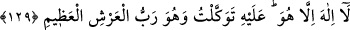

İÇİNİZDEN GELEN
BİR PEYGAMBER
128. Andolsun size içinizden öyle bir Rasûl geldi ki, sıkıntıya uğramanız ona ağır
gelir; size düşkün, müminlere çok şefkatli ve merhametlidir.
129. Eğer (inanmaktan) yüz çevirirlerse de ki: “Allah bana yeter. O’ndan başka
ilah yoktur. O’na dayandım. O, büyük arşın Rabb’idir.
“Andolsun size içinizden öyle bir Rasûl geldi ki,” Âyetteki hitabın Arap ve Arap
olmayanların tamamına (bütün insanlara) yönelik olma ihtimâli vardır. Bu takdirde
mânâ şu şekilde olur: Ey insanlar! Andolsun size şânı büyük bir Rasûl gelmiştir. Rasûl,
Allah Teâlâ’nın, hükümlerini tebliğ etmesi için insanlığa gönderdiği insan demektir.
Rasûl, insanlar ondan ürküp de ona tâbi olmaktan imtina etmesinler ve “Bizim ona
uymaya gücümüz yetmiyor. Çünkü o bizim cinsimizden değildir” demesinler diye
içinizden, yani meleklerden veya başkalarından değil sizin cinsinizden, sizin gibi
âdemoğlundan gönderilmiştir.
Rasûlün beşer cinsinden olduğu hususunu Allah Teâlâ’nın şu âyetleri de
desteklemektedir: “De ki “Ben de sizin gibi bir insanım.” (el-Kehf, 18/110),
“Andolsun ki, Allah, müminlere büyük lütufta bulundu: Zira onlara kendi
içlerinden... bir rasûl gönderdi.” (Âl-i İmrân 3/164). Çünkü âyette geçen “müminler”
lafzı her ırktan bütün insanlara şamildir.
Bu takdirde “kendi içlerinden” ifadesinin mânâsı, “kendi cinslerinden” demek olur.
Çünkü melek ve cin, insan cinsinden olmadıkları ve beş duyu ile idrak edilemedikleri
için onlardan (peygamber olarak) faydalanılamaz. Öyleyse bu konuda iki yönlü;
tecerrüd (beşerîlikten soyutlanma) ve taalluk (insanlarla irtibat kurabilme) yönü olan
beşer cinsinden bir vâsıtaya ihtiyaç duyulmaktadır. Bu vâsıtanın Kuds tarafından vahyi
alabilmesi için tecerrüd yönünün, aldığı vahyi insanlar tarafına aktarabilmesi için de
taalluk yönünün bulunmasına ihtiyaç vardır.
Bu vâsıta Rasûlullah (s.a.)’dir. Bundan anlaşılıyor ki Rasûl, son derece latif olduğu
için latif (rûhânî) cisimler olan cinlerin de ondan vahiy alabilmesi mümkün olmuştur.
Bu yüzden onları, bir beşer gibi davet etmiştir.
Yeryüzü sakinlerinin gecesini aydınlatan bir meş’ale